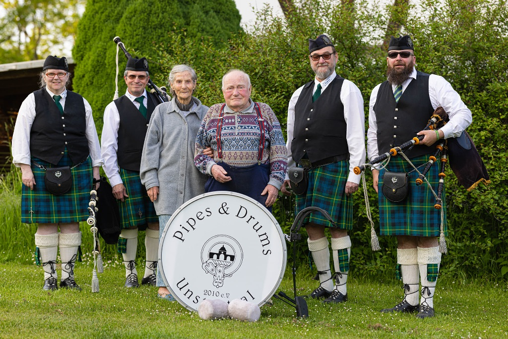
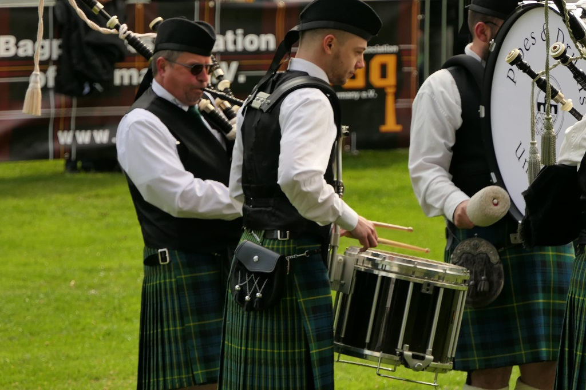
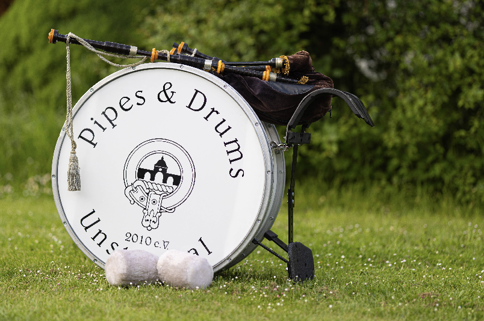

Eure Pipeband
im Herzen Deutschlands
im Herzen Deutschlands

Wir sind der Verein Pipes and Drums Unstruttal 2010 e.V.. Seit 2010 begeistern wir die Ohren vieler Menschen mit traditioneller schottischer Musik. Mit Dudelsack, Snare-, Tenor- und Basstrommel wiederspiegelt sich die schottische Kultur in deiner Nähe! Wir treten regelmäßig in Thüringen auf, jährlich z.B. bei der Mühlhäuser Stadtkirmes. Wir sind aber nicht zögernd bei Anfragen von weiter weg! Unter unserem E-Mail Postfach info@pipes-drums-unstruttal.de oder der Telefonnummer +491704130335 könnt ihr uns für euer nächstes Fest buchen.
Über Uns

Unsere Übungsstunden finden jeden Samstag von 10:00 bis 12:00 im Mehrgenerationenhaus in Mühlhausen statt. Du hast Interesse daran, ein Instrument der schottischen Pipe Band zu erlernen? Dann bist du herzlich eingeladen, bei den nächsten Übungsstunden teilzunehmen. Eine Anmeldung ist nicht nötig, wobei es von Vorteil wäre, sich trotzdem zu melden, um nicht zufällig alleine da zu stehen! Die Adresse des Mehrgenerationenhaus ist Hinterm Neuen Brunnen 8, 99974 Mühlhausen/Thüringen. Die Teilnahme ist zuerst kostenlos, deshalb ist nicht zu zögern!
Probe

Zu erreichen sind wir unter unserem E-Mail Postfach info@pipes-drums-unstruttal.de oder der Telefonnummer +491704130335. Hier könnt ihr uns für eure nächsten Events oder Feiern buchen oder andere Fragen zu unserem Verein stellen.
Dieses Jahr nehmen wir wiedermal an der Mühlhäuser Stadtkirmes teil. Beim Platzkonzert am Samstag, sowie beim Kirmesumzug am Sonntag könnt ihr unsere Musik live in Mühlhausen hören!
Kontakt & Termine
Dieses Jahr nehmen wir wiedermal an der Mühlhäuser Stadtkirmes teil. Beim Platzkonzert am Samstag, sowie beim Kirmesumzug am Sonntag könnt ihr unsere Musik live in Mühlhausen hören!